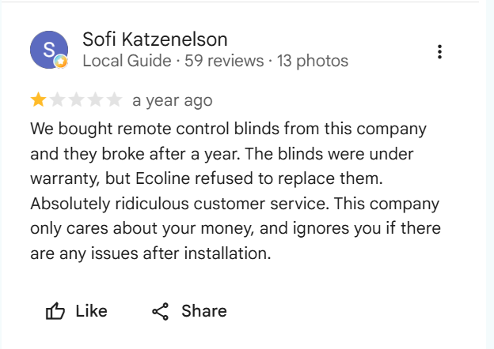
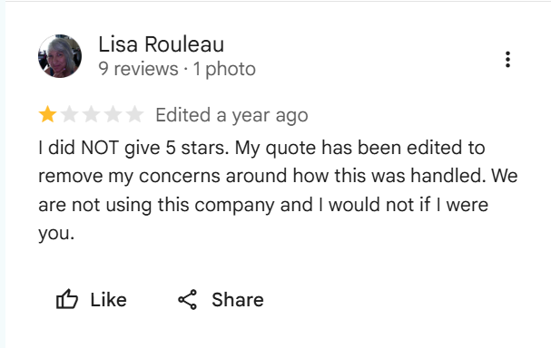
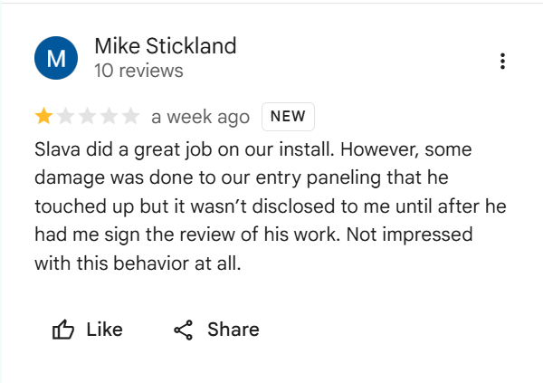
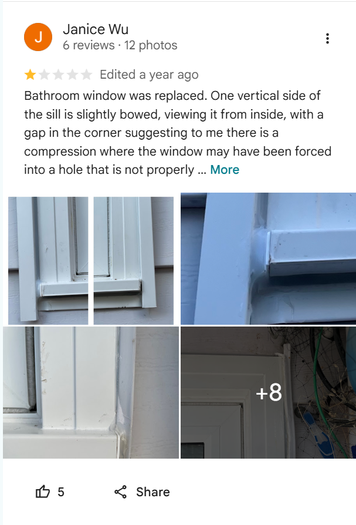
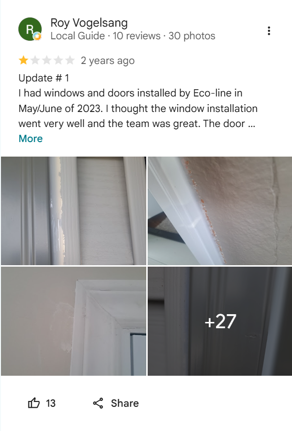
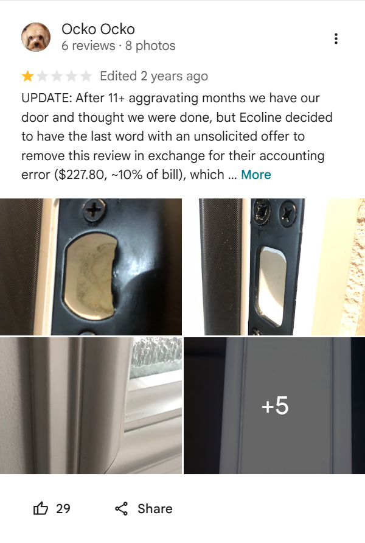
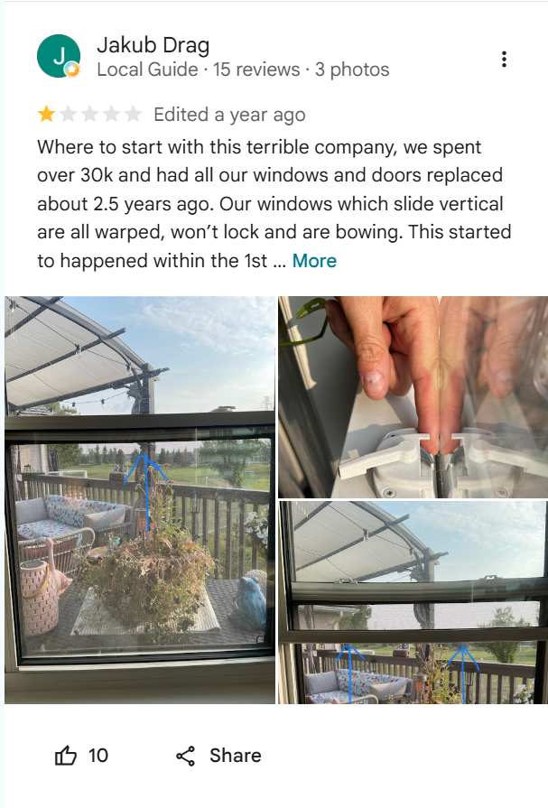
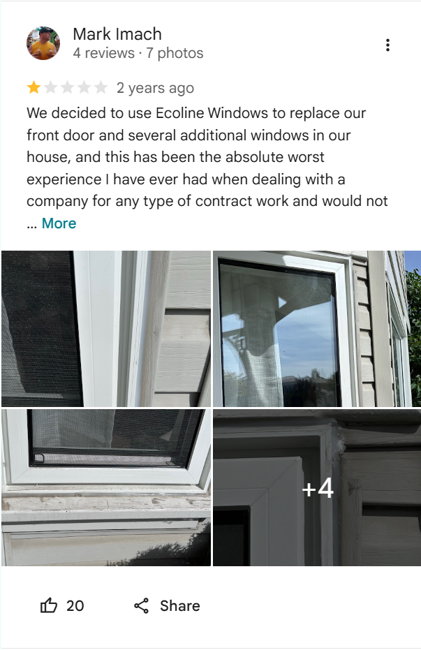
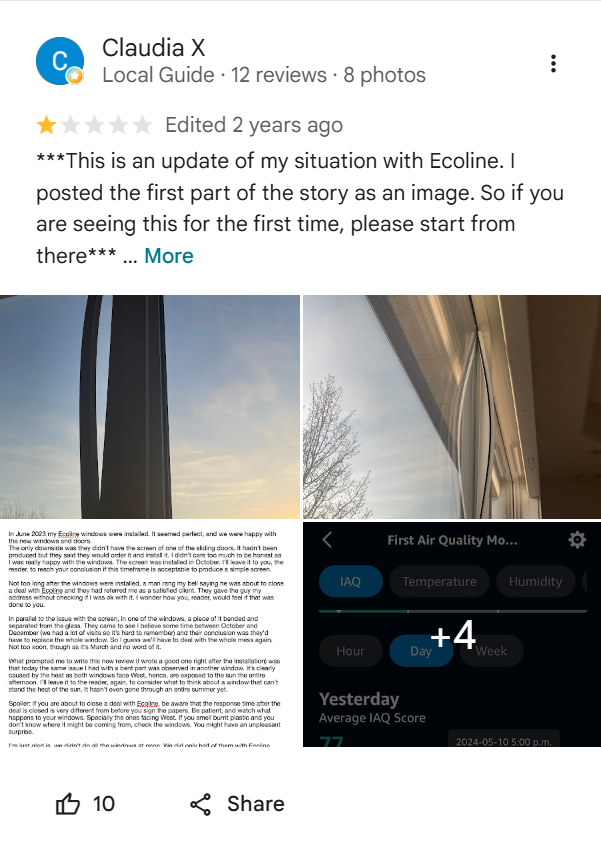
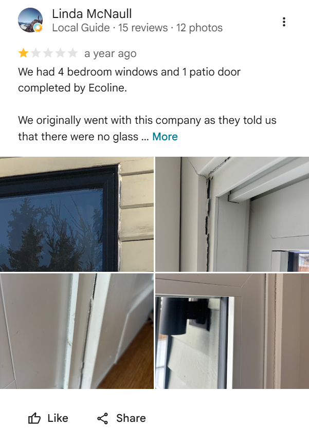

Level C: customer-reported
Ecoline Windows and Doors
Branches in Alberta, British Columbia, Manitoba and elsewhere. Reviews and complaints from customers in several provinces.
Customers report installation problems and warranty disputes, and a few say they were offered money or pressured over negative reviews. No court, regulator or news investigation has confirmed the review-related claims.
What has been reported
- BBB complaint pages for branches in Ottawa, Calgary, Halifax, Edmonton and Winnipeg describe installation quality, measurement errors and disagreements over contract terms.
- On TrustedPros, a Vancouver-area customer says a project coordinator offered a $50 gift card in connection with a negative review. This is one customer’s claim.
- A Reddit thread, started by a customer looking for others with unresolved problems, says some customers were offered money to take reviews down and that a lawyer’s letter tied warranty coverage to removing reviews. The posts are anonymous and we have not seen documents.
- Several commenters in that thread say the company wanted full payment before installation, and some Calgary customers say the warranty they were sold differs from the terms they later received.
What the company says
- Its website describes a 25-year warranty on windows and installation, and explains that Stage Windows is its manufacturing arm. company-stated
- In its replies on BBB, it generally says it delivered the work the contract covered. company-stated
- A page on its own site argues that some negative reviews come from competitors and gives tips for telling real from fake. company-stated
- It cites BBB accreditation and large review counts, for example a 4.8 Google rating from 1,396 reviews in Winnipeg (company-published figures). company-stated
What is not established
- We found no evidence that Ecoline posts or buys fake reviews.
- Claims of payments or pressure to remove reviews come from individuals and are unconfirmed.
- Different pages on Ecoline’s site give different founding years and installation totals. This may simply be outdated pages and is not evidence of wrongdoing.
- Ratings differ widely between platforms and branches, so a single score says little.
What customers say
Summaries in our words of reviews and complaints posted on BBB. Names, staff names and identifying details are removed. We show praise and criticism side by side, and we have not verified any of it.
BBB Calgary profile: customer reviews average 4.72 out of 5 from 118 reviews, and BBB lists 29 complaints in the last three years, 4 of them in the last 12 months. Ecoline Calgary is BBB-accredited with an A+ rating.
Customer reviews
Windows replaced. The project manager explained the options clearly and followed up after the job. The installers kept the house clean and finished ahead of schedule.
The customer spent more than a year deciding, and chose Ecoline partly because they did not feel pressured. Seven windows and a large patio door were done in one day, and the customer says the house is warmer so far. The price was a little below competitors, and the glass-breakage warranty was a deciding factor.
After a break-in, the company measured and quoted a replacement door the next day. The door was made on time and installed as promised.
A new front door was installed in one visit and the customer calls the work well done.
Complaints, with Ecoline’s response
A customer says new custom exterior doors have several defects, including gaps, missing screws, trim separating and a sill coming loose, and that existing alarm wiring was covered over during installation. Ecoline and a retail partner offered a refund if the customer kept the door and signed a release. The customer says the release had confidentiality terms and declined.
Ecoline says the offer was more than fair and is final.
Three windows were made too short more than once, and a scheduled installation fell through, so the project took about four months.
Ecoline apologized and completed the installation. The customer then confirmed the response was satisfactory.
Water came through a window several years after installation. The customer says independent companies told them the siding should have been peeled back so the window could be flashed properly.
Ecoline says the contract specified a brick-mould installation, its inspection found the seal intact, and the warranty does not cover siding or roof problems. The two sides disagree about whether the building code applies.
After installation, a customer reported air coming in through the window drain holes, along with several finishing problems.
Ecoline agreed to replace one window as a test case. The customer says the wider issue is not yet resolved.
A customer says the replacement patio door opens narrower than they believe local code allows.
Ecoline says the door matched the signed contract, and that custom products are non-refundable.
On Google, the company does not respond to negative experiences from its clients
Critical Google reviews of Ecoline shown below. On each one, the company left no public reply, unlike the praise it responds to with thanks. Summaries are the reviewers’ own public posts; screenshots were captured from Google.

1★ — blinds failed under warranty, replacement refused. Reviewer: Local Guide, 59 reviews. View on Google Maps.

1★ — reviewer says her quote was edited to remove her concerns. Reviewer: 9 reviews. View on Google Maps.

1★ — damage to entry paneling not disclosed until after the review was signed. Reviewer: 10 reviews. View on Google Maps.

1★ — replacement window sill bowed, gap in the corner; reviewer says the window was forced into a poorly prepared opening. Reviewer: 6 reviews, 12 photos. View on Google Maps.

1★ — windows installed well but the door work is faulty; photos show cracked and separating trim. Reviewer: Local Guide, 10 reviews, 30 photos. View on Google Maps.

1★ — reviewer says that after an 11-month ordeal, the company offered to refund a billing error (about $227, ~10% of the bill) in exchange for removing the review. Reviewer: 6 reviews, 8 photos. View on Google Maps.

1★ — says $30k+ of replacement windows are warped, won't lock and are bowing about 2.5 years after installation. Reviewer: Local Guide, 15 reviews, 3 photos. View on Google Maps

1★ — calls replacing a front door and several windows "the absolute worst experience" he has had with any contractor. Reviewer: 4 reviews, 7 photos. View on Google Maps

1★ — an updated post about windows installed in June 2023; describes a window piece that bent and separated from the glass, and west-facing windows that smell of burnt plastic in the sun. Reviewer: Local Guide, 12 reviews, 8 photos. View on Google Maps

1★ — 4 bedroom windows and a patio door installed by Ecoline; photos show gaps and cracked sealant at the frames. Reviewer: Local Guide, 15 reviews, 12 photos. View on Google Maps
Company snapshot
- Locations
- Calgary AB, Port Coquitlam BC (Vancouver area), Winnipeg MB, and others
- Founded
- Company pages say 2002 and September 2008
- Ratings
- BBB Calgary: 4.72 from 118 reviews, 29 complaints in three years, A+ and accredited. TrustedPros: Vancouver 4.3 (31 reviews), Saskatoon 4.6 (40 reviews). HomeStars Calgary profile: 1,218 reviews. Company-published Google rating: 4.8, Winnipeg.
- Checked
- Ratings change, so check the platforms directly.
Sources
- BBB complaints, Ottawa
- BBB Calgary: complaints and customer reviews
- BBB complaints, Halifax
- BBB complaints, Edmonton
- BBB complaints, Winnipeg
- TrustedPros, Vancouver and Saskatoon
- HomeStars, Calgary profile
- Reddit thread, r/BuyCanadian
- Company pages: facts, Stage Windows, fake complaints, Winnipeg reviews